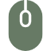

profile
元々、絵を書いたりすることが趣味で何か、絵に関わる仕事はないかと 考え、デザインの学校に通うことが きっかけになります。
- 
skill

Hobby
旅行に行くことで、カラー版は、イタリアのトレビの泉の写真になります。 白黒版は岐阜県の白岡郷の写真になります。

元々、絵を書いたりすることが趣味で何か、絵に関わる仕事はないかと 考え、デザインの学校に通うことが きっかけになります。
旅行に行くことで、カラー版は、イタリアのトレビの泉の写真になります。 白黒版は岐阜県の白岡郷の写真になります。